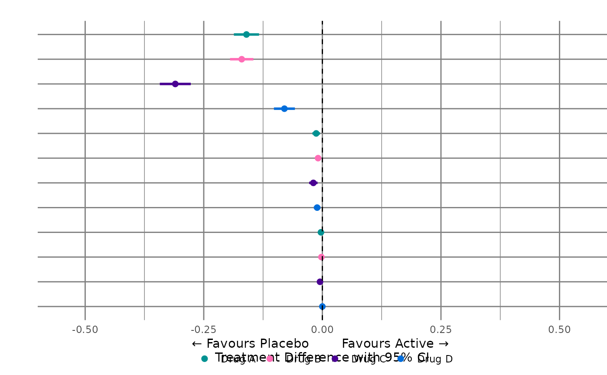

Create Dot and Forest plots and associated data
create_dot_forest_plot(
data,
drug,
benefit,
risk,
filters,
category,
type_graph,
type_risk,
select_nnx,
x_scale_fixed_free,
ci_method,
space_btwn_out_yn = "Y"
)(data.frame) dataset
(character) selected drug
(character) selected benefit
(character) selected risk
(character) selected filter
(character) selected category
(character) selected way to display binary outcomes
(character) selected way to display risk outcomes
(crude proportions, exposure-adjusted rates (per 100 PYs))
(character) show NNT/NNH
(character) free or fixed x-axis scale
(character) selected method to display
(character) control spacing between outcomes
confidence intervals
(Supplied in effects table, Calculated within the program)
dot_plot_src <- subset(effects_table, !is.na(Prop1))
bdin <- subset(dot_plot_src, Factor == "Benefit")
rdin <- subset(dot_plot_src, Factor == "Risk")
create_dot_forest_plot(
data = dot_plot_src,
drug = unique(dot_plot_src$Trt1),
benefit = unique(bdin$Outcome),
risk = unique(rdin$Outcome),
filters = "None",
category = "All",
type_graph = "Absolute risk",
type_risk = "Crude proportions",
select_nnx = "Y",
x_scale_fixed_free = "Fixed",
ci_method = "Calculated",
space_btwn_out_yn = "N"
)
#> [2024-10-08 13:55:12] > Prepare Dot plot data for binary outcomes
#> [2024-10-08 13:55:12] > trigger analysis based on type
#> [2024-10-08 13:55:12] >
#> absolute risk CI for binary outcomes is calculated and saved
#> [2024-10-08 13:55:12] > Prepare Forest plot data for absolute risk
#> [2024-10-08 13:55:12] > Prepare Dot plot data for binary outcomes
#> [2024-10-08 13:55:12] > trigger analysis based on type
#> [2024-10-08 13:55:12] >
#> absolute risk CI for binary outcomes is calculated and saved
#> [2024-10-08 13:55:12] > Prepare Forest plot data for absolute risk
#> [2024-10-08 13:55:12] > Dataout object from the create_order_label_der function is created
#> [2024-10-08 13:55:12] > Prepare data for Dot and Forest plots
#> [2024-10-08 13:55:12] > Create Dot plot
#> Scale for x is already present.
#> Adding another scale for x, which will replace the existing scale.
#> [2024-10-08 13:55:12] > Create Forest plot
#> [2024-10-08 13:55:12] > Create Dot plot
#> Scale for x is already present.
#> Adding another scale for x, which will replace the existing scale.
#> [2024-10-08 13:55:12] > Create Forest plot
#> [2024-10-08 13:55:12] > Create Dot and Forest plots and associated data
#> $myplot_lft0
#> NULL
#>
#> $myplot_rgt0
#> NULL
#>
#> $myplot_lft1
#>
#> $myplot_rgt1
#>
#> $myplot_lft2
#>
#> $myplot_rgt2

#>
#> $myplotdata1
#> # A tibble: 32 × 12
#> rate treatment type factor outcome group neword allobs mylab fobs
#> <dbl> <fct> <chr> <chr> <chr> <int> <dbl> <dbl> <chr> <dbl>
#> 1 0.46 Drug A Binary Benefit Primary Effic… 1 5 16 " … 4
#> 2 0.05 Placebo Binary Benefit Primary Effic… 1 5 16 " … 4
#> 3 0.2 Drug B Binary Benefit Primary Effic… 2 4 16 " … 4
#> 4 0.06 Placebo Binary Benefit Primary Effic… 2 4 16 " … 4
#> 5 0.46 Drug C Binary Benefit Primary Effic… 3 3 16 " … 4
#> 6 0.04 Placebo Binary Benefit Primary Effic… 3 3 16 " … 4
#> 7 0.14 Drug D Binary Benefit Primary Effic… 4 2 16 " … 4
#> 8 0.03 Placebo Binary Benefit Primary Effic… 4 2 16 " … 4
#> 9 0.19 Drug A Binary Risk Reoccurring AE 1 -2 16 " … 12
#> 10 0.03 Placebo Binary Risk Reoccurring AE 1 -2 16 " … 12
#> # ℹ 22 more rows
#> # ℹ 2 more variables: adjust_number <int>, mins_y <dbl>
#>
#> $myplotdata2
#> # A tibble: 16 × 16
#> treatment type factor outcome group neword allobs mylab fobs adjust_number
#> <fct> <chr> <chr> <chr> <int> <dbl> <dbl> <chr> <dbl> <int>
#> 1 Drug A Binary Benef… Primar… 1 5 16 " … 4 1
#> 2 Drug B Binary Benef… Primar… 2 4 16 " … 4 1
#> 3 Drug C Binary Benef… Primar… 3 3 16 " … 4 1
#> 4 Drug D Binary Benef… Primar… 4 2 16 " … 4 1
#> 5 Drug A Binary Risk Reoccu… 1 -2 16 " … 12 2
#> 6 Drug B Binary Risk Reoccu… 4 -3 16 " … 12 2
#> 7 Drug C Binary Risk Reoccu… 7 -4 16 " … 12 2
#> 8 Drug D Binary Risk Reoccu… 10 -5 16 " … 12 2
#> 9 Drug A Binary Risk Rare S… 2 -6 16 " … 12 3
#> 10 Drug B Binary Risk Rare S… 5 -7 16 " … 12 3
#> 11 Drug C Binary Risk Rare S… 8 -8 16 " … 12 3
#> 12 Drug D Binary Risk Rare S… 11 -9 16 " … 12 3
#> 13 Drug A Binary Risk Liver 3 -10 16 " … 12 4
#> 14 Drug B Binary Risk Liver 6 -11 16 " … 12 4
#> 15 Drug C Binary Risk Liver 9 -12 16 " … 12 4
#> 16 Drug D Binary Risk Liver 12 -13 16 " … 12 4
#> # ℹ 6 more variables: mins_y <dbl>, diff <dbl>, se <dbl>, lower <dbl>,
#> # upper <dbl>, Trt2 <chr>
#>